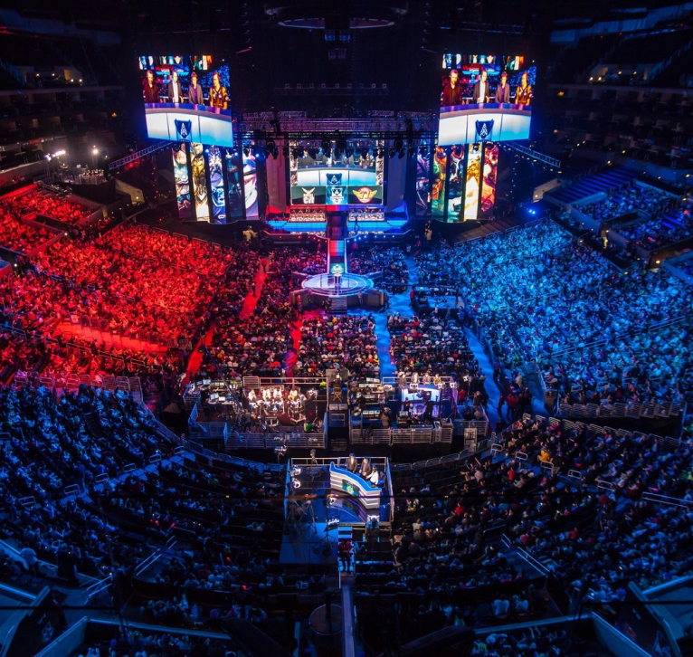

ESPORTS
Este es un festival de videojuegos donde podrás competir y probar los últimos productos de la industria de los juegos y los deportes electrónicos.Esta es una oportunidad para disfrutar de emocionantes competiciones.Tendrá lugar en el recinto Fira Barcelona Gran via del 15 al 17 de marzo de 2025.Se disputarán oficialmente 6 juegos en el festival.